専門工事会社の提出書類業務を、
もっとシンプルに。
元請ごとに違う提出書類。
もう、毎回ゼロから準備しない。
会社情報・作業員・資格証をまとめて管理。
現場ごとの不足を確認し、作業員への資料依頼から
元請別の提出準備までをひとつの流れで進められます。
- 登録不要
- 営業電話なし
- 実際の操作画面をそのまま体験できます
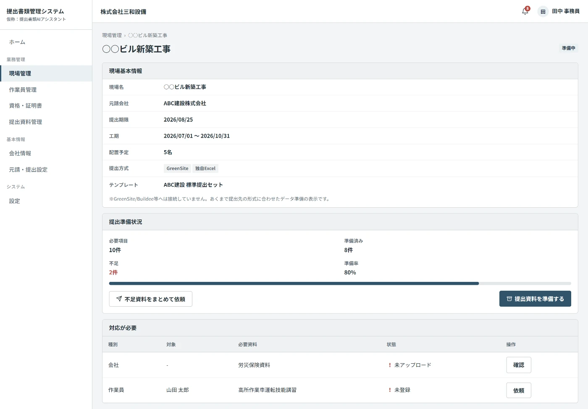
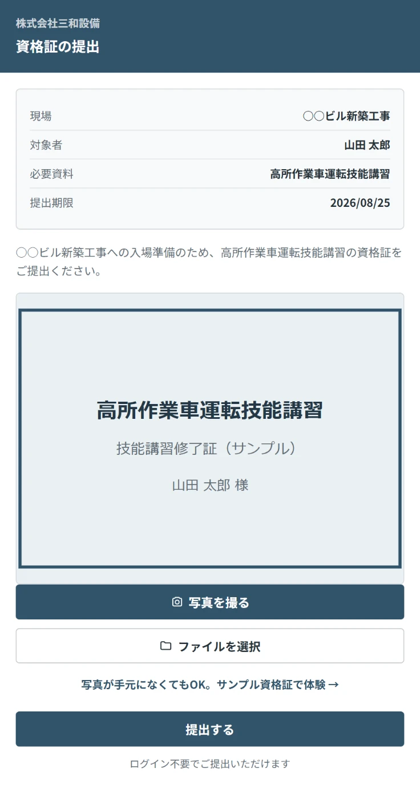
提出書類の準備、
こんな状態になっていませんか？
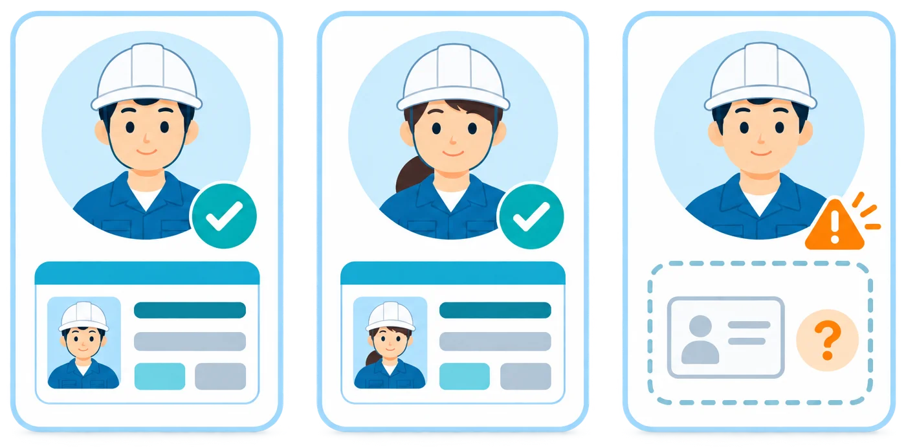
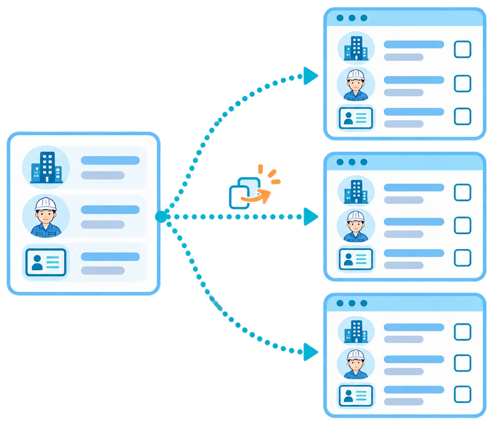
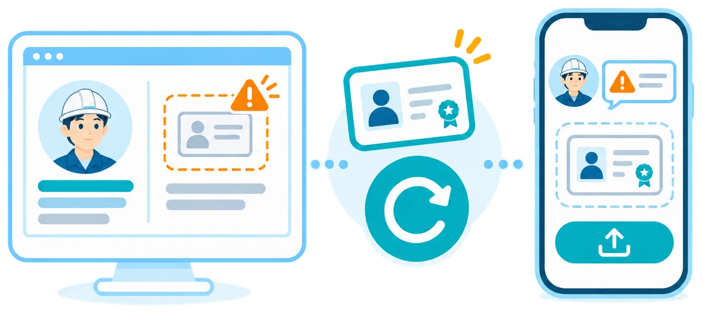
バラバラな提出書類業務を、ひとつに整理。
今までのやり方と、このシステムを使った後を比べてみてください。
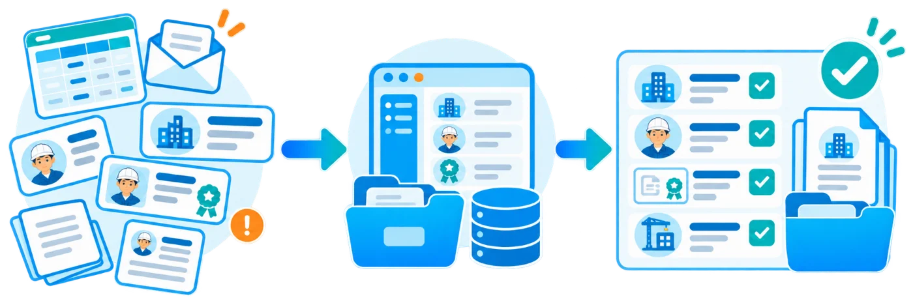
Excel、メール、資格証ファイルを見ながら、誰の何が足りないかを毎回確認。
- 同じ情報を何度も入力
- 資格証を探して再依頼
- 元請ごとに管理方法が違う
会社・作業員・資格証をまとめて管理し、現場ごとの不足だけを確認。
- 必要なものがすぐ分かる
- 不足している本人へ依頼
- 提出準備まで同じ流れ
「同じ情報を何度も集める仕事」から、「必要なものだけ確認する仕事」へ。
必要な情報を一度まとめれば、
現場ごとの「足りない」が見える。
登録から提出準備まで、6つの流れで完結。
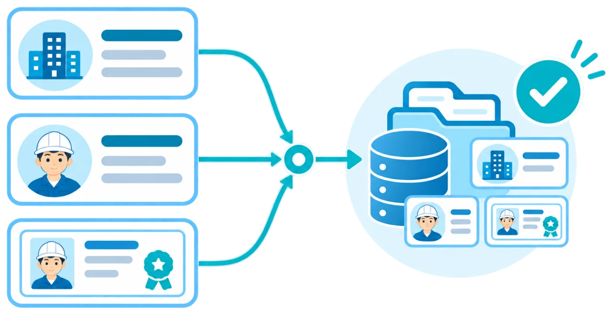
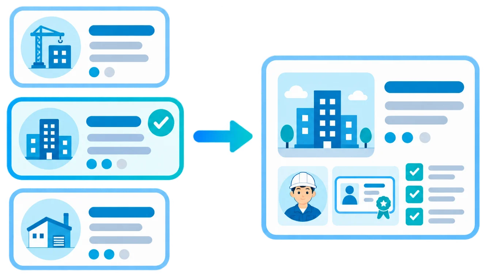
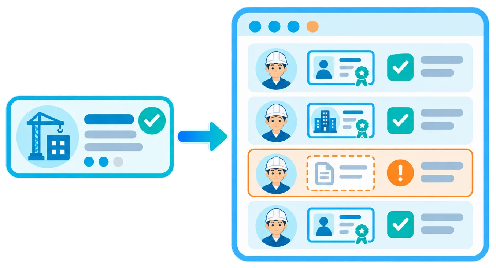
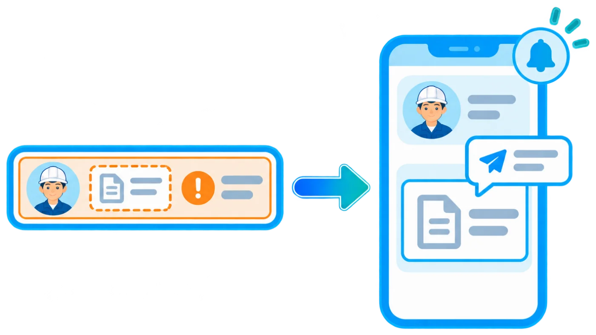
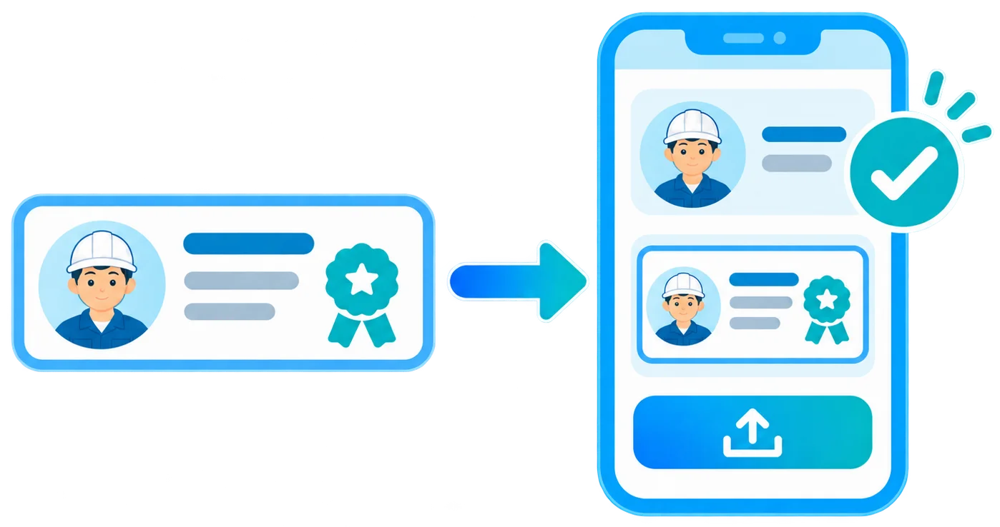
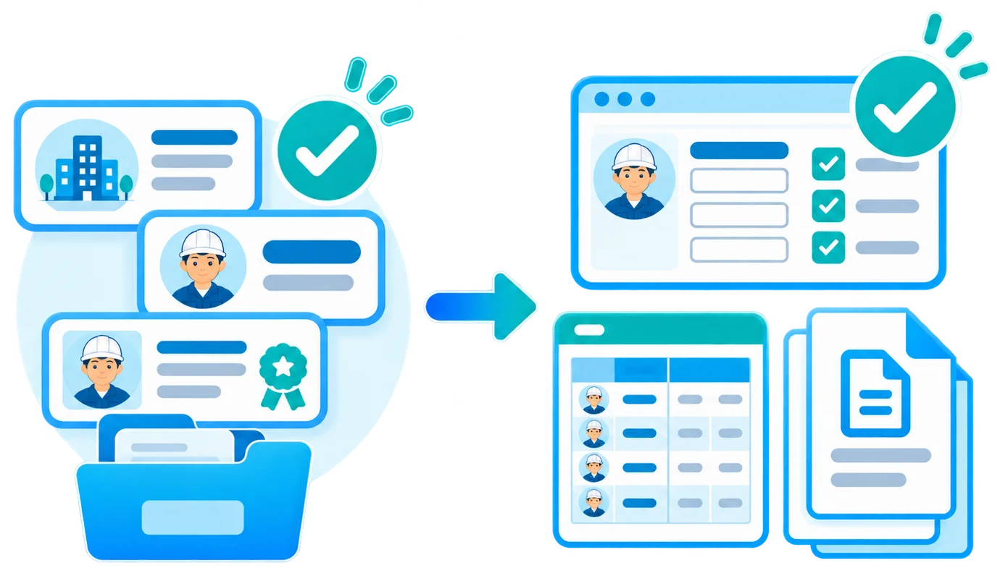
この流れを実際の画面で体験できます
3分デモで体験する実際の画面
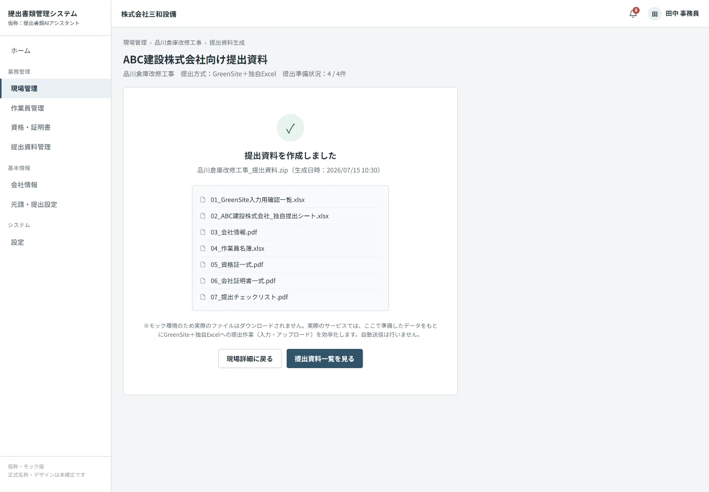
元請や現場が変わっても、
同じ情報を使い回せる。
会社情報・作業員情報・資格証を、元請ごとに登録し直すのではなく、自社側で一度まとめて登録。 登録済みの情報をもとに、複数の元請・現場それぞれの提出準備に利用できます。
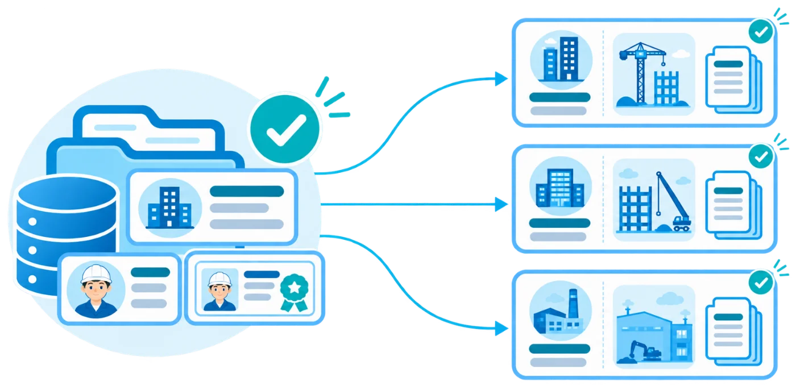
※各元請・外部サービスへ自動送信する機能を表すものではありません。登録済み情報をもとに、提出前の準備を効率化する想定です。
料金仮説
需要検証段階のため、まずは1プランのみでご検討いただける内容にしています。
- 会社情報管理
- 作業員管理
- 資格証管理
- 資格証の自動読み取り
- 現場ごとの不足確認
- 不足資料依頼
- 提出準備チェック
- 提出資料生成
このサービスは施工管理システムではありません。工程管理・施工写真・勤怠・給与・請求・電子契約 などを一つにまとめる総合施工管理システムではなく、「元請へ提出する書類の準備」に絞ったサービスです。